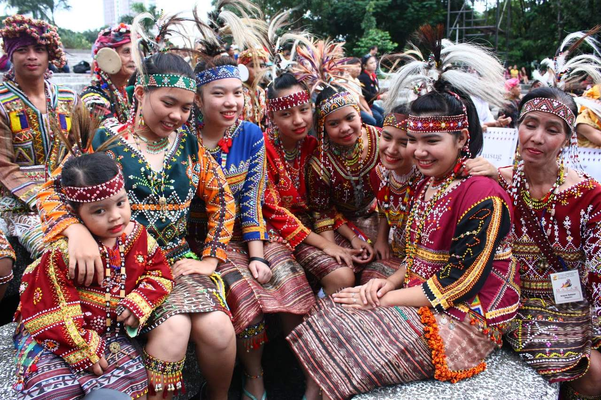
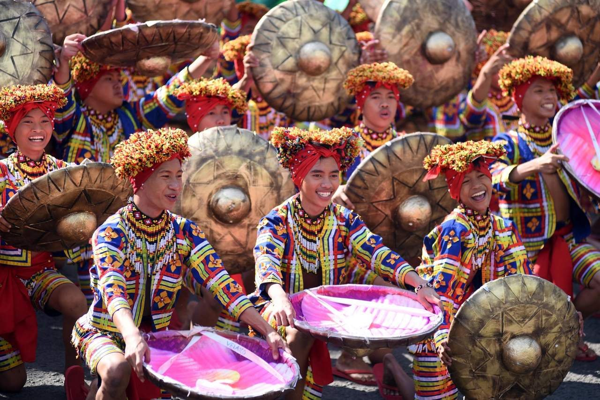
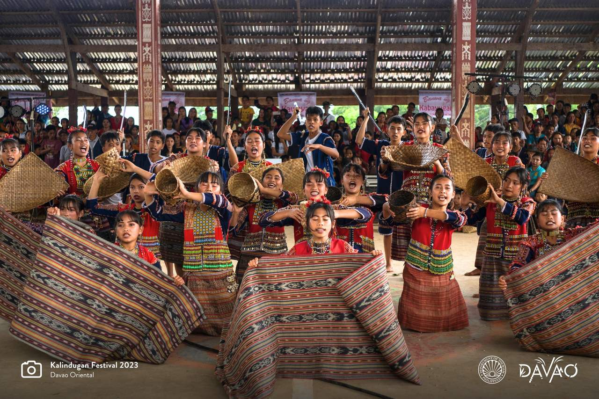
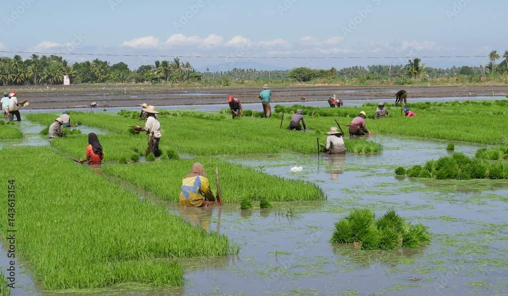
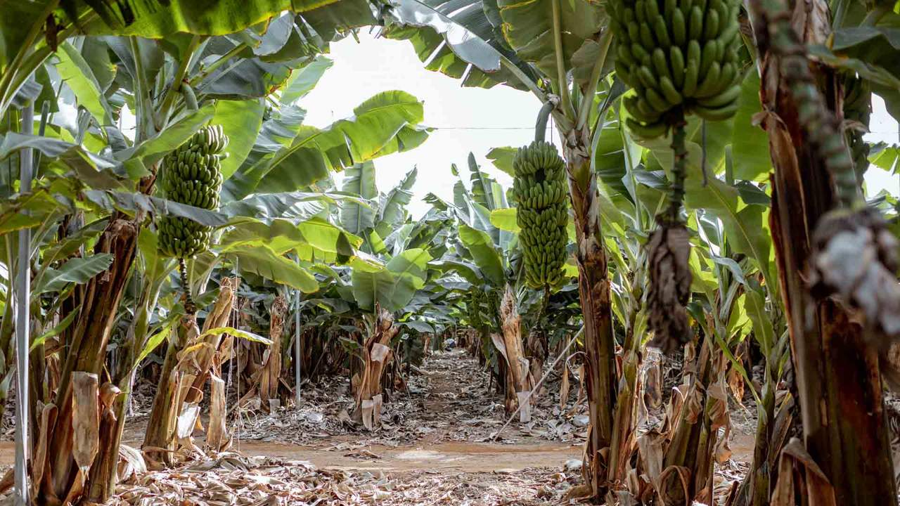
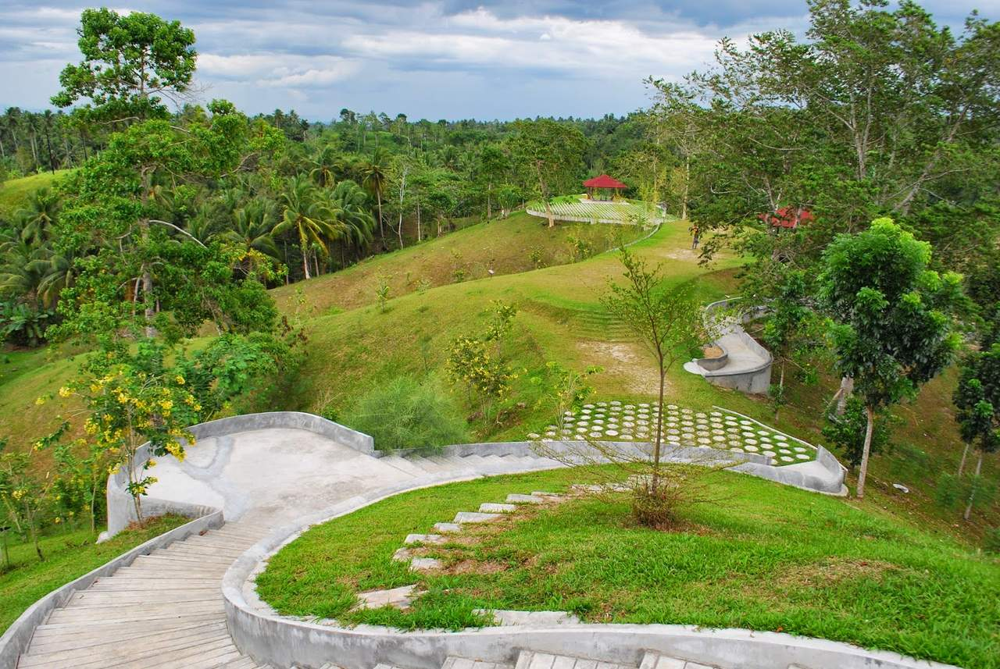

History, culture, and the heart of Mindanao
Get to know the province that has it all where rich culture, breathtaking landscapes, vibrant traditions, and warm hospitality come together in one unforgettable destination.
Davao del Norte is located in the Davao Region (Region XI) of Mindanao, Philippines. It is bounded by Davao de Oro to the east, Bukidnon to the north, Compostela Valley to the northeast, and the Davao Gulf to the south. Its capital is Tagum City. The province encompasses 8 municipalities and 4 component cities, including the Island Garden City of Samal.
Davao del Norte was carved out of the original undivided Davao province in 1967 through Republic Act No. 4867. Long before Spanish colonization, the area was inhabited by the Mandaya, Mansaka, Kalagan, and Manobo peoples. American colonizers established agricultural settlements in the early 1900s, and the post-war era brought waves of Visayan and Ilocano settlers who shaped the province's modern identity.
The province is famous for Samal Island (Garden City of Samal), Mount Hamiguitan Range Wildlife Sanctuary (UNESCO World Heritage Site), the Monfort Bat Cave (Guinness World Record — world's largest bat colony), Hagimit Falls, Pearl Farm Beach Resort, and the vibrant night markets of Tagum City. Its natural and cultural diversity makes it one of the Philippines' most complete destinations.
The province is home to diverse indigenous peoples including the Mandaya, Mansaka, Kalagan, Matigsalug, and Manobo tribes. Their rich traditions — from weaving intricate textiles to performing sacred ritual dances and crafting traditional instruments — are celebrated in colorful festivals throughout the year. The Mandaya, known for their distinctive malong weaving, are recognized as the original inhabitants of the Davao region.
Davao del Norte boasts extraordinary biodiversity. Mount Hamiguitan shelters over 300 endemic species of flora and fauna, including the critically endangered Philippine Eagle. The Davao Gulf coastline supports thriving coral reefs and seagrass beds. Samal Island's waters are home to whale sharks and migratory marine life, while the province's highlands are blanketed by old-growth montane forests with world-class trekking trails.
Davao del Norte offers a perfect blend of nature, culture, and adventure. Whether you seek the thrill of mountain trekking, the serenity of pristine beaches, or the warmth of indigenous Filipino hospitality, this province has it all. It is also one of the safest and most well-organized destinations in the Philippines, with excellent infrastructure, a welcoming local government tourism program, and a wide range of accommodation options for every budget.





